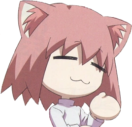
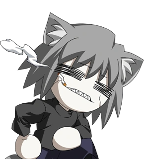
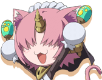
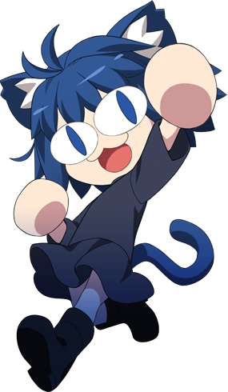
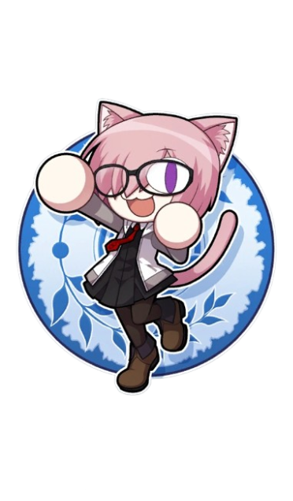

OUR DIFFERENT TYPES OF NECO

Destiny
Destiny is a Neco Spirit residing in Ahnenerbe in Carnival Phantasm and Fate/Grand Carnival.

Chaos
Chaos is a parody character, a Chaos-styled Neco-Arc, that came to be through a mutation.

Bubbles
Bubbles is a Neco Spirit residing in Ahnenerbe in Carnival Phantasm and Fate/Grand Carnival.

NecoCield
Neco-Ciel is a Neco Spirit appearing in the Tsukihime Remake series. She is a parody of Ciel.

Mysterious Neco Z
Mysterious Neco Z is a Neco Spirit parody of Merlin residing in Ahnenerbe Chaldea in Fate/Grand Carnival.

Necocolight
Necoco-Necocolight is a Neco Spirit resembling Mash Kyrielight residing in Great Cat's Village.